Dora

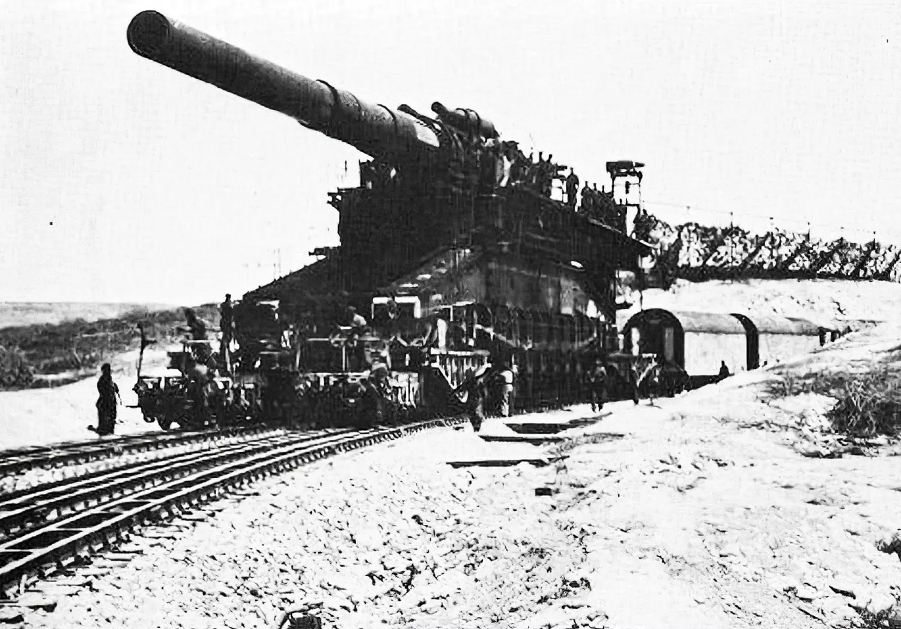
10,5 cm FlaK 38/39

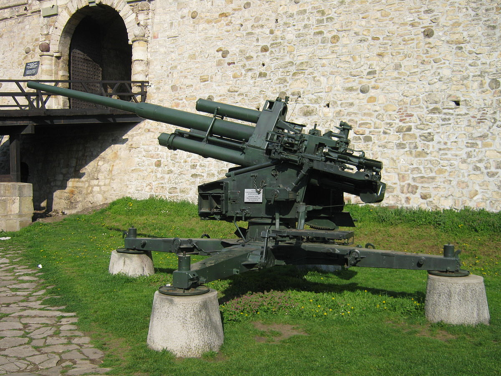
Sturmtiger
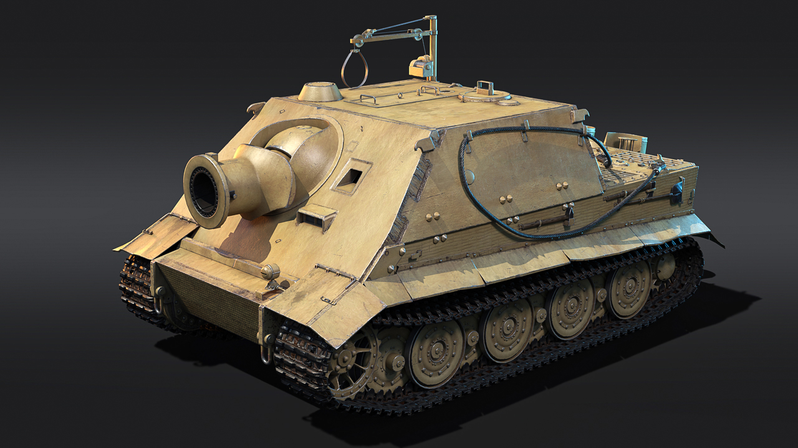
«Штурмтигр» — немецкая самоходная артиллерийская установка
периода Второй мировой войны, класса штурмовых орудий, тяжёлая по массе.
Nebelwerfer
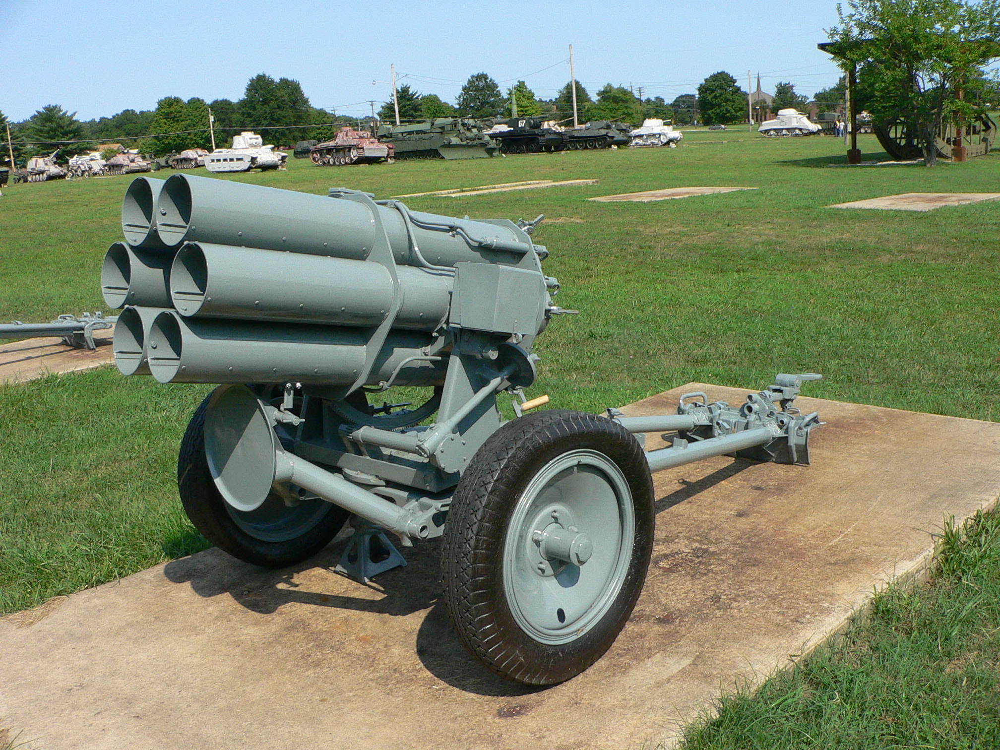
Nebelwerfer — германская реактивная система залпового огня времён
Второй мировой войны..
Long Tom

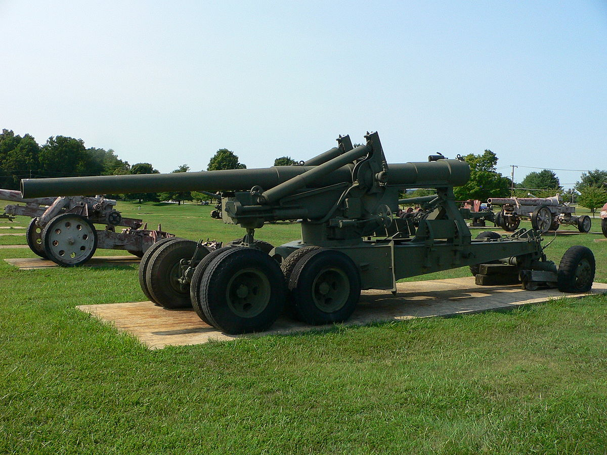
М115
M115 — буксируемая 203,2-мм гаубица США периода Второй мировой войны.
Разработка новой 203-мм гаубицы, для замены устаревших орудий Mk.8½ периода Первой мировой войны
М110
M110 — самоходная гаубица калибра 203,2-мм — самоходная артиллерийская
установка (САУ) США, класса самоходных гаубиц.
М109
M109 — американская самоходная артиллерийская установка, класса самоходных гаубиц.
Создана в 1953—1960 годах для замены малоудачной M44, параллельно со 105-мм САУ M108.
СУ-152

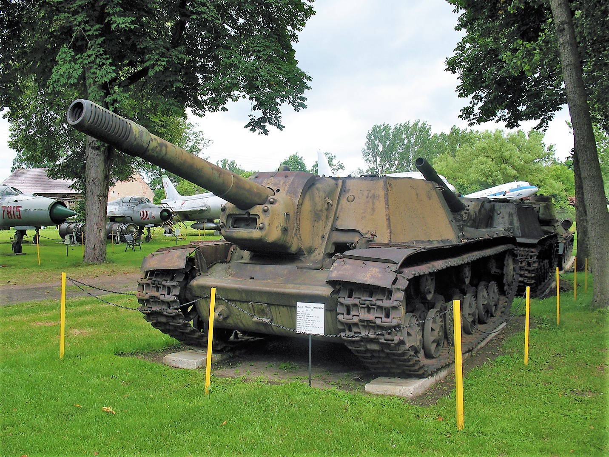
CУ-122

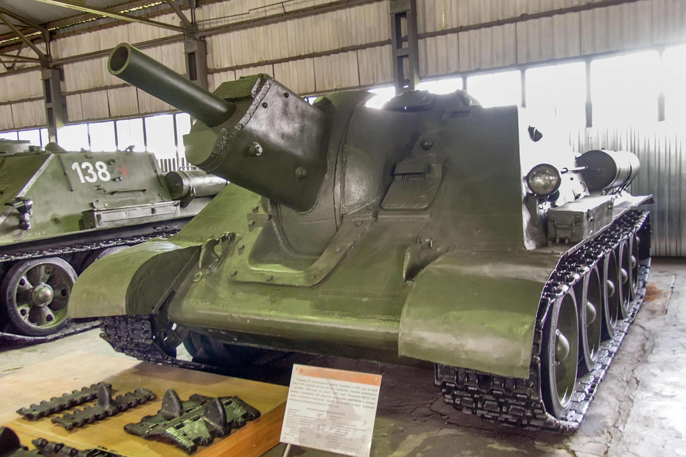
МЛ-20

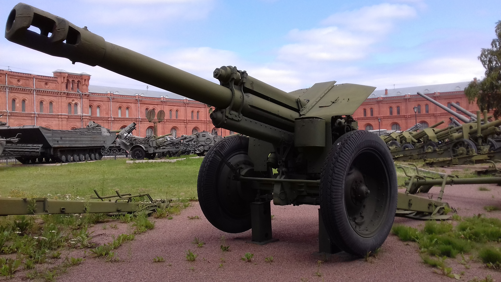
БР-2

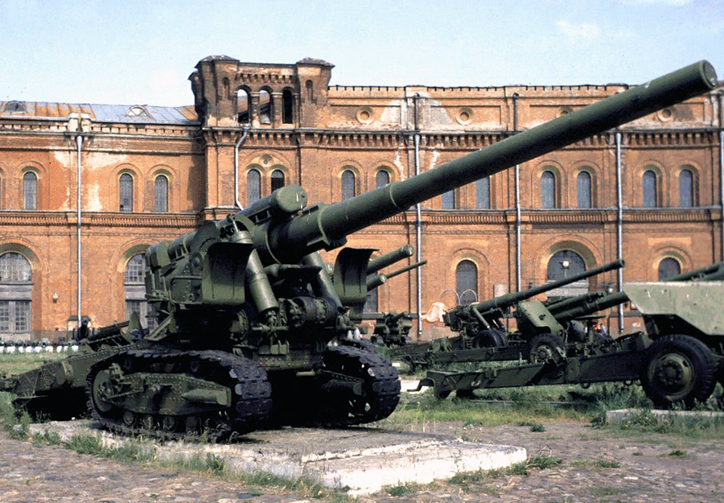
5,5-дюймовая пушка

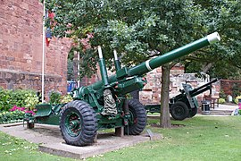
6-дюймовая гаубица

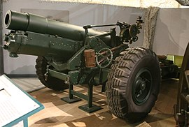
60-фунтовая пушка

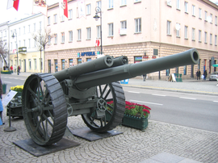
9.2 дюймовая гаубица

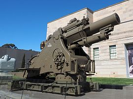